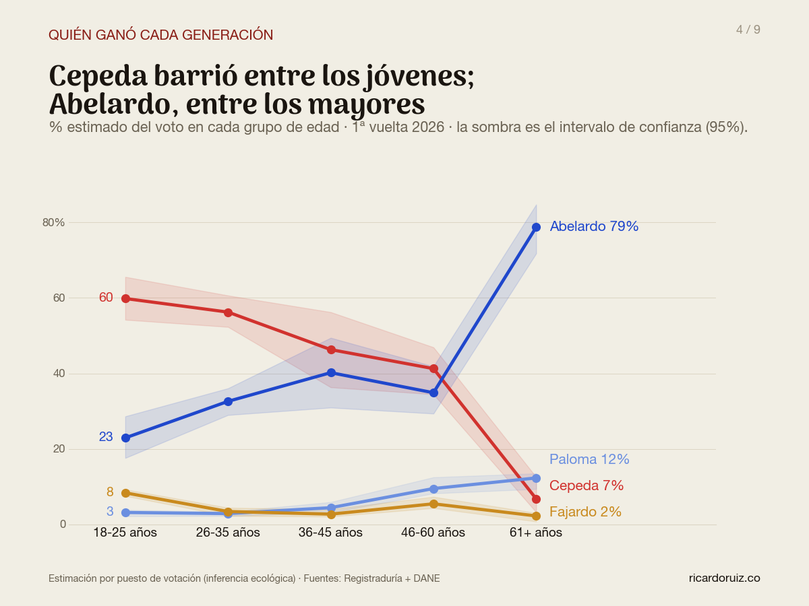
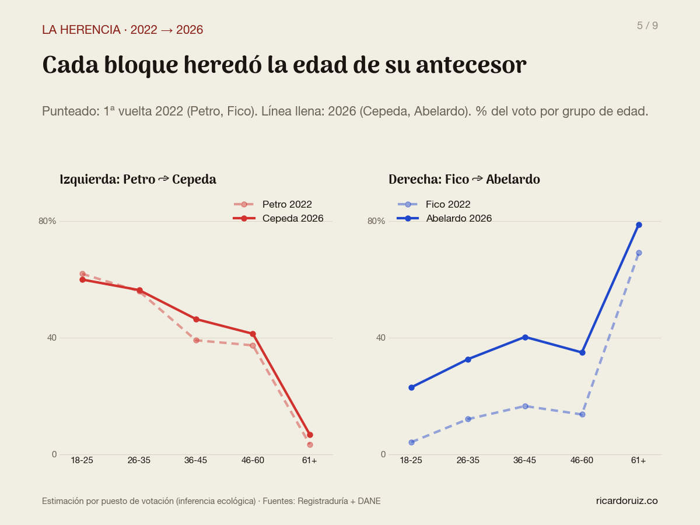
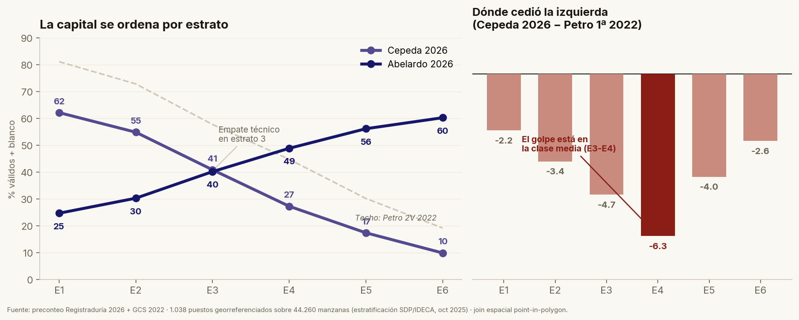
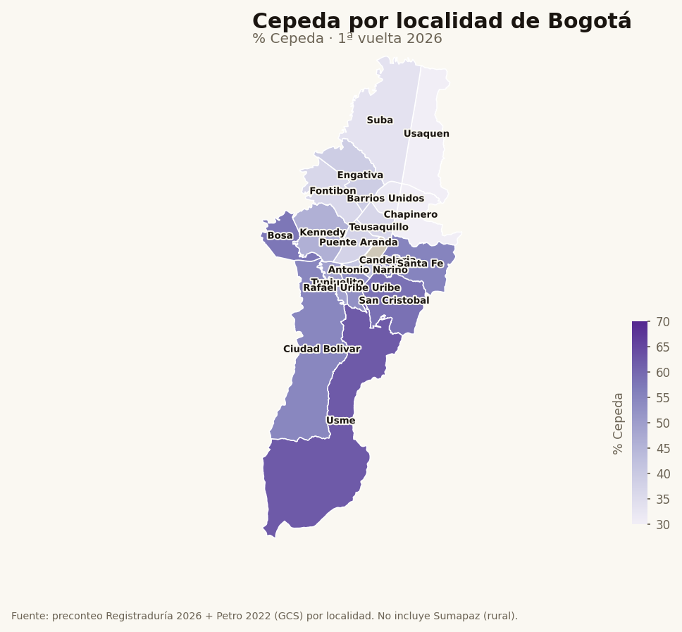

Maestría en Comunicación Política · Universidad de La Sabana
Leer un público con datos
Cómo una jornada electoral se lee socialmente — y qué le sirve a una causa.
Ricardo Ruiz · ricardoruiz.co · Clase: Estrategias de Participación Digital · 2026
Contexto · 60 segundos
No soy encuestador. Soy un lector de datos.
Periodismo de datos y civic-tech. Una plataforma electoral que cruza histórico 2010–2026, encuestas calibradas, escrutinio mesa a mesa y censo.
Herramientas públicas para entender el país + análisis para medios y campañas. El diferencial no es opinar más rápido: es ver con más resolución.
previa-1v · simuladoredades-1v · voto por edadVeleta · dónde se decideOportunidad · dónde crecerdashboards en vivomapas barrio a barrioLab de Política Pública
La idea
El dato no reemplaza conocer al público. Lo vuelve visible.
La intuición te da el arquetipo en la cabeza. El dato te dice dónde vive, qué tan grande es y con qué te estás equivocando. La unidad de análisis baja de 41 millones a unos cientos de personas.
País
1
41,3 M
Departamento
33
1,3 M
Municipio
~1.100
37 K
Puesto
~13.700
600
Mesa · barrio
~125.000
200
Censo electoral / unidades por nivel · tamaño aproximado de cada unidad
Método · lo justo
La conclusión social sale del cruce, no de un solo número.
Histórico electoral 2010–2026, hasta nivel de mesa.
Encuestas calibradas contra un patrón verificable (no todas pesan igual).
Escrutinio / preconteo mesa a mesa — lo que de verdad pasó.
Censo: edad, sexo, territorio — quién podía votar y dónde.
El dato crudo no opina. El cruce sí — y por eso es defendible.
Caso 1
El choque de generaciones
No fue tanto izquierda contra derecha. Fue, sobre todo, joven contra mayor.
01
Caso 1 · Los perfiles
Una línea baja, la otra sube. Casi en espejo.
Cepeda
18–2560%
→
61+7%
Abelardo
18–2523%
→
61+79%
% del voto de cada grupo de edad · duelo de los dos punteros. Cepeda puntea en todas las edades… menos entre los mayores de 60.

Caso 1 · De dónde viene
Se heredó de 2022.
Cepeda calcó el perfil joven de Petro; Abelardo heredó —y amplificó— el perfil mayor de Fico.
Cada bloque se quedó con la edad de su antecesor. Solo se hizo más extremo.
Para comunicación: las generaciones cargan memoria de bloque. No le hablas "a un joven": le hablas a una identidad generacional que ya viene con historia.

Caso 1 · Pasa en todo el país
Dos países, según la edad.
Si solo votaran los jóvenes, Cepeda gana casi todo el país.
Si solo votaran los mayores, Abelardo gana los 33 departamentos.
Las excepciones cuentan: entre jóvenes, Abelardo aguanta en Antioquia y los Llanos. Y pasa igual ciudad por ciudad: Bogotá, Cali, Cartagena, Barranquilla, Medellín, Bucaramanga.
Caso 1 · La lectura útil
El mismo mensaje no le habla a los dos.
49%
del voto de Cepeda es de menores de 36
38%
del voto de Abelardo es de mayores de 60
72%
del voto de Paloma es de mayores de 45
Distinta edad → distinto mensaje y distinto canal: TikTok / Instagram vs. WhatsApp familiar, radio, televisión.
Caso 2
Las dos Bogotás
Una ciudad que se parte en dos sobre un mapa.
02
Caso 2 · El gradiente
A mayor estrato, menos Cepeda y más Abelardo.

Voto por estrato socioeconómico · Bogotá 1V 2026
El voto sube y baja casi monótono con el estrato. La clase social se lee en la urna casi sin ruido.
42,7%
Cepeda en el total de la ciudad
Ojo (lo retomamos al final): estrato, edad e ingreso van de la mano — y eso puede engañar.
Caso 2 · La geografía
Sur y centro vs. norte y occidente.
Cepeda gana 10 localidades: Usme, Bosa, Ciudad Bolívar, San Cristóbal, Kennedy…
Abelardo gana 10: Usaquén, Chapinero, Suba, Teusaquillo…
435
barrios gana Cepeda (dato directo)
223
barrios gana Abelardo

Caso 2 · La lectura útil
Dónde poner el territorio y qué relato cala.
Una causa no habla igual en Ciudad Bolívar que en Usaquén. El dato permite microtargeting territorial — ético y transparente:
Concentrar recursos escasos donde el mensaje encaja, en vez de regarlos parejo.
Elegir el frame por zona: seguridad y orden donde resuena; derechos y cuidado donde resuena.
No quemar mensajes en territorios donde van a rebotar.
El dato no decide el relato. Decide a quién le cuentas cuál.
Caso 3
Arquetipos emocionales
Más allá de la demografía: ¿qué mueve a la gente?
03
Caso 3 · Cinco formas de sentir lo público
No son demografías. Son emociones políticas.
Protección
Orden, seguridad, certeza frente a la amenaza.
Securitización · Buzan & Wæver
Continuidad
Estabilidad, lo que funciona, gestión sin sobresaltos.
System Justification · Jost
Supervivencia
El bolsillo, los servicios, llegar a fin de mes.
Economic Voting · Lewis-Beck
Castigo
Desconfianza, rabia, demanda de alternancia.
Affective Intelligence · Marcus
Pertenencia
Dignidad, identidad, autonomía del territorio.
Social Identity · Tajfel & Turner
Caso 3 · Del dato al relato
El dato no inventa el frame. Te dice cuál.
Territorio Protección → relato de orden y competencia.
Territorio Castigo → relato de alternancia, fin de lo de siempre.
Territorio Pertenencia → relato de dignidad y autonomía.
Esto es Lakoff (frames) y Ganz (historia de self / us / now) — pero con datos que dicen quién está dónde.
Para una causa — no solo un candidato
Tres preguntas que el dato sí responde.
1
¿Quién ya está conmigo?
Tu base. No la persuades — la movilizas. Gastar persuasión aquí es gastar de más.
2
¿Quién es alcanzable?
El techo captable: voto blando afín, indecisos cercanos. Ahí va el esfuerzo de persuasión.
3
¿Qué lenguaje mueve a cada segmento?
Edad + territorio + arquetipo → el relato correcto para cada quien.
Lo que el dato NO hace
Sé cómo votó un territorio. No cómo votó una persona.
Inferencia ecológica: estima el comportamiento de un grupo, no de un individuo. Riesgo de falacia ecológica.
Ejemplo real (género): leído por puesto, el dato llega a invertir el signo; leído bien (a nivel mesa, con efectos fijos), se corrige. Misma data, unidad equivocada → conclusión equivocada.
Los valores extremos van siempre con su rango (intervalo de confianza); y el porqué necesita campo y escucha cualitativa.
El dato achica la búsqueda. No reemplaza escuchar.
Cierre
Los datos no piensan por ti.
Te dicen dónde mirar, a quién y con qué probabilidad te estás equivocando.
El relato sigue siendo tuyo. El dato solo te dice a quién contárselo. · ricardoruiz.co
Gracias
¿Preguntas?
Con gusto les muestro cualquiera de las herramientas en vivo.
edades-1v · el voto por edadbogota-1v-barrios · mapa barrio a barriooportunidad · dónde crecerveleta · dónde se decideprevia-1v · el simulador